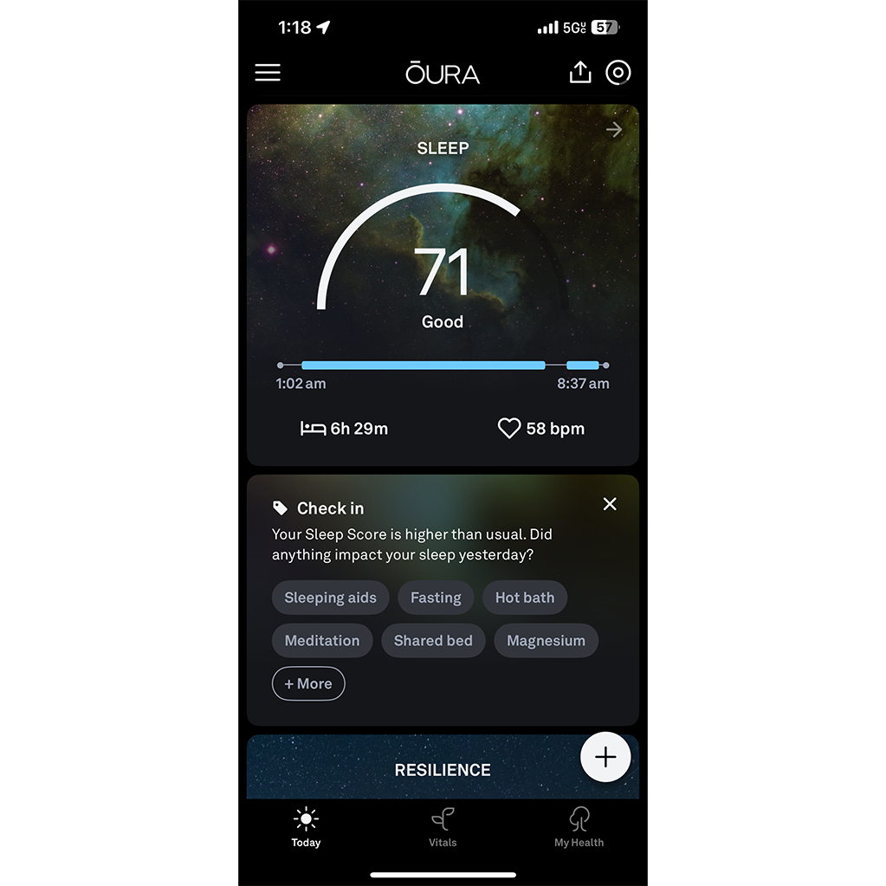

I Tried 4 Sleep Tracking Apps for 30 Days. Here's the Honest Data.

January 2025. I wore two watches to bed and slept with my phone on my chest for a month. My husband thought I'd lost my mind. He wasn't wrong.
It started with a client who was obsessed with his Oura ring. He checked his "readiness score" before he even peed in the morning. "But the data says I slept badly," he told me. I asked how he felt. He paused. "Actually, I feel fine." Then why trust the ring over your own body? That question bugged me. So I ran a dumb experiment on myself.
Four apps. Two wearables. One notebook. Thirty days. My goal wasn't to find the "best" tracker. It was to answer one question: does any of this actually help you sleep better, or does it just make you anxious about sleep?
Spoiler: mostly the second one. But there's a kernel of usefulness buried under all the marketing garbage.
The first week was genuinely fun. I wore two watches to bed like some kind of cyborg. The Apple Watch told me I got six hours and forty-two minutes of sleep. The cheap fitness tracker I borrowed from a friend told me seven hours and eighteen minutes. That's a thirty-six-minute difference. On the same night. Same wrist. How is that possible?
The Apple Watch uses heart rate and movement to detect sleep stages. The cheap tracker only uses movement. The cheap tracker thought I was asleep when I was lying still but awake — which I do for about twenty to thirty minutes every night, just thinking about embarrassing things I said in 2017. The Apple Watch caught my heart rate being higher during those periods and correctly labeled them as "awake." So the cheap tracker overestimated my sleep by about half an hour every night. That's not a small error. That's the difference between "I slept enough" and "I'm sleep-deprived."
App B — the microphone-based one that you've definitely seen ads for — was even weirder. It told me I had "restless legs" on nights when I was perfectly still. Because it hears sounds from outside — my husband coughing, the furnace kicking in, Leo's white noise machine — and interprets them as me thrashing around. One night it said I woke up eleven times. I woke up maybe twice. Eleven times? I would remember that. I would be a wreck.
App C, the nerdy open-source tracker, was the most honest. It didn't claim to detect sleep stages. It just tracked movement and gave you a graph of "still vs moving." That's it. No "REM" or "deep" nonsense. I respected that. But it was also useless because it didn't tell me anything I didn't already know. Yeah, I moved a lot at 3 AM. I know. I was there.
App D, the subscription one with the cute animal cartoons, was the most polished. It told me I had the "sleep consistency of a sea otter." I don't know what that means, but it made me smile. Then I realized I was paying five dollars a month for a cartoon otter. That's when the excitement curdled into something else.
By day ten, I was annoyed. Every morning, I would look at four different sets of data. They disagreed about everything: sleep duration, wake-up time, number of awakenings, time in deep sleep. One app said I got forty-five minutes of deep sleep. Another said eighteen minutes. Another said "deep sleep not measured." Which one was right? I had no idea. Because I don't have an EEG machine at home. I could borrow one from my old lab at CU Boulder, but that would require explaining to my former colleagues why I was wearing an electrode cap to bed. No thanks.
These apps present their data as facts. They use scientific words like "hypnogram" and "sleep architecture" and "restoration index." But most of them are guessing. And the guesses are often wrong. I looked up the validation studies — or tried to. App B's website says "clinically validated" but doesn't link to any study. I found one independent paper from 2022 that tested it. The accuracy for detecting wake versus sleep was about seventy percent. For detecting deep sleep versus REM? Below fifty percent. That's worse than a coin flip. So I was paying for — and stressing over — data that was literally less reliable than a coin.
Around this time, a guy named Derek was waking up at 4 AM every day to check his "recovery score." If the score was low, he'd feel anxious and skip his workout. If the score was high, he'd feel validated. But his actual performance in the gym didn't correlate with the score at all. He was just outsourcing his mood to an algorithm. I told him to hide the app for a week. Just hide it, not delete it. He did. And his morning anxiety dropped by about eighty percent. He slept better because he stopped worrying about whether he had slept well. That's the paradox of sleep tracking: the more you track, the worse you sleep.
I'm not going to give you a day-by-day log because that would be boring and also I lost the notebook somewhere between my car and the kitchen. But I did keep a summary. At the end of thirty days, I compared each app's average sleep duration to my paper log.
Paper log (my best guess): six hours fifty minutes average. Apple Watch: six hours forty-seven minutes. Close. App B (microphone): seven hours thirty-two minutes. Consistently overestimated. App C (open source): six hours forty-one minutes. Also close, but no stage data. App D (subscription + cheap tracker): six hours fifty-eight minutes. Decent.
So two apps were reasonably accurate on duration. But stage detection? A complete mess. On night twenty-two, I had terrible sleep. Leo woke me up at 1:30 AM because he had a nightmare. I was up for forty-five minutes. Then I fell back asleep around 2:15 AM and woke up at 6:30 AM. Total sleep about four and a half hours. I felt like garbage. I knew I felt like garbage.
Apple Watch said: four hours thirty-two minutes, twenty-two minutes deep sleep. App B said: six hours eight minutes (??), fifty-one minutes deep sleep. App D said: five hours one minute, eighteen minutes deep sleep.
Only the Apple Watch got the duration right. But all three got the deep sleep wrong — because deep sleep is hard to measure without EEG. My paper log didn't even try to guess deep sleep. Because you can't. You don't know if you're in deep sleep unless someone tries to wake you up and you don't respond. So those "deep sleep" numbers? Ignore them. They're fiction dressed up in bar graphs.
By the last week, I stopped caring. I wore the watches but barely looked at the data. I just wanted the experiment to end so I could go back to sleeping like a normal person who doesn't have electronics strapped to her body.
Here's what I concluded, and it's not what I expected. Sleep trackers are useful for exactly one thing: detecting patterns over long periods. If you wear one for three months and you see that your sleep duration drops every Tuesday and Wednesday, you can ask yourself: "What am I doing on Mondays and Tuesdays?" Maybe it's a late meeting. Maybe it's wine. Maybe it's anxiety about a recurring call. The tracker can point to a pattern you wouldn't notice otherwise.
But checking your sleep score every morning is like stepping on a scale every hour. The noise will drive you crazy. The signal is in the trend, not the daily number. So my recommendation — and I hate using that word, but here we are — is to track for two weeks, then stop. Get your baseline. See if there's a clear problem, like consistently sleeping less than six hours or waking up at 3 AM every night. Then put the tracker away and work on the problem using actual behavioral changes, not more data. Because data without action is just anxiety with a graph.
After the experiment, I kept exactly one tool: the cheap fitness tracker. Not for sleep stages — those are useless. But for bedtime consistency. The tracker shows me when I went to bed and when I woke up. That's it. No scores, no stages, no otters. And I use my own cycle calculator to figure out when to go to bed. Because that's the thing that actually changes how you feel in the morning, not staring at a readiness score.
That calculator has been on my phone's home screen for two years. I use it whenever my schedule changes — travel, daylight savings, Leo's school starting earlier. It takes ten seconds. It's free. It doesn't need a subscription. And it works because it's based on math, not on a proprietary algorithm that's trying to sell you a mattress.
During the experiment, I also tested how the apps handled naps. Most of them don't. They assume you only sleep at night. So if you take a twenty-minute nap at 2 PM, the app might ignore it or classify it as "restless awake time." That's useless. That's why I built a separate nap planner. Because naps are different from overnight sleep, and the apps don't get it.
The nap planner doesn't track anything. It just tells you what to do right now. That's the difference between a tool and a tracker. A tool helps you make a decision. A tracker just collects data and hopes you'll figure it out. I'm in the tools business, not the data business.
If you already have an Apple Watch or a Fitbit, fine. Use it. But don't buy one just for sleep tracking. Spend that money on blackout curtains or a white noise machine or even a nicer pillow. Those things have a bigger effect. If you don't have a tracker, you're not missing anything. Really. The people who sleep best are not the ones with the most data. They're the ones who go to bed at roughly the same time, wake up at roughly the same time, and don't scroll their phones in the dark.
I know that's boring advice. But boring advice is usually true. The sleep industry doesn't want you to know that, because they can't charge you ten dollars a month for "go to bed earlier."
So here's my challenge to you: put your phone in another room tonight. Not on your nightstand. Another room. See how you sleep. Then tell me if you miss the data.
P.S. My husband asked me if I was going to keep wearing two watches after the experiment. I said no. He said, "Good. You looked ridiculous." Marriage is about honesty, I guess.